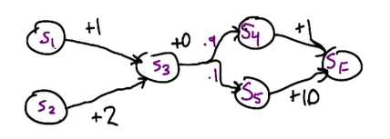

TBD
Markov Decision Processes try to give us a framework, the framework need we describe our problem
with these important concepts:
| Concept |
Math present |
Describetion |
| States |
S |
describes the world's state |
| Model |
T(s,a,s′)=P(s′∥s,a) |
T is Transition Model function it give that the probability that if you were in state s, and you toke action a and you end up transitioning with state s^{\prime} |
| Actions |
A(s), A |
the actions you can do in the world |
| Reward |
R(s), R(s, a), R(s, a, s^{\prime}) |
Reward function give you some rewards when you were in state s, or you were in state s and toke action a, or you were in state a and toke action a and you end up transitioning at s′ |
| Policy |
π(s)=a,π∗ |
π(s) is policy we need to find and it give that when you were in state s and what action you should take in the next step and this policy can help you find the answer or get destination or whatever, and π∗ is the best policy you found in these all possible policies |
States, Model(Transition Model), Actions, Reward they are problem, Policy is the solution.
Try to think about whats the different if your reward function is R(s)=2 and R(s)=−2, that mean whatever state you are, you will get 2 or -2 reward, that the simplest reward function.
R(2)=2 will encourage you to stay in the world insteal of getting terminal state.
R(2)=2 will keep you want to leave away from the world.
if you use s util function to compare two sequence of state like:
U1(s0,s1,s2,s3,s4,...)
U2(s0,s1′,s2′,s3′,s4′,...)
and you get the conclusion that U1>U2
then for these two sequence of state:
U1(s1,s2,s3,s4,...)
U2(s1′,s2′,s3′,s4′,...)
you will also think:
U2>U3
that is the stationary preferences
if one kind of U function like this:
U(s0,s1,s2,s3,...)=∑t=0∞R(st)=∞
that's true because the reward is always positive.
this is a typical infinite world situation, if your U function like this, each step of your decision making will be nothing.
but if your U function like this:
U(s0,s1,s2,s3,...)=∑t=0∞γtR(t)
the γt will change the thing to a situation that you still in a infinite world but you will reach a point that whatever you choose to go, you never get the bound of the world.
also you will get a equition:
U<=∑t=0∞γtRmax=1−γRmax
because:
x=(γ0+γ1+γ2+γ3+...)
x=γ0+γ⋅(γ0+γ1+γ2+...)
x=γ0+γ⋅x
x=1−γγ0
so:
∑t=0∞γtRmax=1−γRmax=1−γγ0⋅Rmax
How we use mathematic way to express policy function:
π∗=πargmaxE[∑t=0∞γtR(st)∣π]
that means the optimal policy is that if we follow this policy, we can get a sequences of states and it's corresponding rewards sum is max. Also the rewards is discounted by γ factor.
Next how to express the utility of s:
Uπ(s)=E[∑t=0∞γtR(st)∣π,s0=s]
so the utility of s is the long term reward of current state reward plus all the other rewards follow the policy π which is the rewards from s on to the infinite state.
Note: R(s) is immediately feedback/reward U(s) is long term feedback/reward
if we have utility we have new policy function:
π∗(s)=aargmax∑s′T(s,a,s′)U(s′)
Now the utility is always follow the optimal policy:
U(s)=Uπ∗(s)
It's means the optimal policy for every state, return the action a that maximizes my expected utility. This is recursive function because we use optimal policy π∗ to calculate itself, later we will make it possible.
Now we introduce bellman equation:
U(s)=R(s)+γamax∑s′T(s,a,s′)U(s′)
We ganna use U(s′) to calculate U(s), the utility equals immediately reward at state s plus discounted utility that use the action a which maximizes the long term rewards from s on.
Right now we have Bellman equation, and we don't know how to solve U(s), the Value Iteration method could be a way to solve it but I don't know why, so let do a quiz:

What we need to know is, all the state initial utility is ZERO except green grid and red grid its One and negative One:
U1(x)=R(x)+γamax⎩⎪⎪⎪⎪⎨⎪⎪⎪⎪⎧∑aupT(x,aup,xup)U0(xup)∑adownT(x,adown,xdown)U0(xdown)∑aleftT(x,aleft,xleft)U0(xleft)∑arightT(x,aright,xright)U0(xright)
then we choose the max one:
U1(x)=−0.04+0.5×amax⎩⎪⎪⎪⎨⎪⎪⎪⎧0.8×0+0.1×1+0.1×0=0.10.8×0+0.1×1+0.1×0=0.10.8×0+0.1×0+0.1×0=00.8×1+0.1×0+0.1×0=0.8=−0.04+0.5×(0.8×1+0.1×0+0.1×0)=0.36
This was because we always want max value so we first choose to go right to red grid at same time we have 0.2 probability to go wrong direction to go down and go up.
When we go up and down, we'll get ZERO utility because initial utility is ZERO. Next we use U1(x) to solve U2(x):
U2(x)=R(x)+γamax⎩⎪⎪⎪⎪⎨⎪⎪⎪⎪⎧∑aupT(x,aup,xup)U1(x)∑adownT(x,adown,xdown)U1(xdown)∑aleftT(x,aleft,xleft)U1(xleft)∑arightT(x,aright,xright)U1(xright)
as you see we need to get U1(xup∣down∣left∣right), we can fellow the function U1(x) way to get it, so:
U1(xup) is out of grid so we assume U1xup=0.
U1(xdown)=−0.04+0.5×amax⎩⎪⎪⎪⎨⎪⎪⎪⎧0.8×0+0.1×0+0.1×−1=−0.10.8×0+0.1×0+0.1×−1=−0.10.8×0+0.1×0+0.1×0=00.8×−1+0.1×0+0.1×0=−0.8
=−0.04+0.5×(0.8×0+0.1×0+0.1×0)=−0.04
U1(xleft)=−0.04+0.5×amax⎩⎪⎪⎪⎨⎪⎪⎪⎧0.8×0+0.1×0+0.1×0=00.8×0+0.1×0+0.1×0=00.8×0+0.1×0+0.1×0=00.8×0+0.1×0+0.1×0=0
=−0.04+0.5×(0.8×0+0.1×0+0.1×0)=−0.04
U1(xright) is already given with 1 so U1(xright)=1
now let's use above result to get U2(x):
U2(x)=−0.04+0.5×amax⎩⎪⎪⎪⎨⎪⎪⎪⎧0.8×0.36+0.1×−0.04+0.1×1=0.3840.8×−0.04+0.1×−0.04+0.1×1=0.0640.8×−0.04+0.1×0.36+0.1×−0.04=00.8×1+0.1×0.36+0.1×−0.04=0.832
=−0.04+0.5×(0.8×1+0.1×0.36+0.1×−0.04)=0.376
U2(x)=−0.04+0.5(0.8×1+0.1×0.36+0.1×−0.04)=0.376
Now we get U2(x), the most interesting thing is I found current Utility of state is similar to anergy spreading from center on, in our situation, the anergy center is xright who's Utility is 1, other utility of state is like under anergy spreading and their value is smaller than center, the smallest one is most faraway one:

So far we learned about getting Utility, and before we have been teached that the policy equation π∗(s)=a need the core components U(s) to solve it, so next we will use the important result to find policy.
First we need to introduce the difference presentation of Bellman Equation
Let's see this one:
V(s)=amax(R(s,a)+γ∑s′T(s,a,s′)V(s′))
You may found the difference is we use V to express Value instead of U to express Utility, we move ahead the amax to express take maximize action, we use R(s,a) to express taking a action in a state and get reward instead of get reward when you get a state.
If we expanded the equation, we can understand the equation by this way:

Semantic description is :
We start at a specific state s, and we take a action a, and we get the reward of taking action a in state s, and this action lands the new state, and we recursively execute the process.
Let's see another one:

If we use a difference view, we may found that the V equation have another recursive sub-sequence from first R(s,a) on to next R(s,a), so we can have another equation:
Q(s,a)=R(s,a)+γ∑s′T(s,a,s′)a′maxQ(s′,a′)
Semantic description is :
We start at some state s and we take action a, and start to process every after, this is we get a reward of taking action a at state s, and this action lands we transform to state s′ and we recursively execute the process.
Let's see another one:
When we get Q equation, we again may found another recursive sub-sequence form first γ on to next γ, so we can have another equation:
C(s,a)=γ∑s′a′max(R(s′,a′)+C(s′,a′))
With this V function and Q function and C function, we can use one of them to express another one of them:
For example:
V(s)=amax(Q(s,a))
Q(s,a)=R(s,a)+γ∑s′T(s,a,s′)V(s′)
C(s,a)=γ∑sprimeT(s,a,s′)V(s′)
I guess you can find more like above those.

These three function indeed have difference meaning in after introduction, let me refer it out slowly.
The word Learning here is to learn what kind of action should require for a given environment and agents, and
what is the optimal policy.
- Plan
- Plan is a fixed sequence of actions
- Conditional Plan
- Conditional Plan is a action tree each branch means a "if" sentence there
- Stationary Policy/ Universal Plan
- for every states there are same "if" or there a universal "if" can handle every states
- very large
Just a way that use one number to describe a policy
- Value of returned Policy
- How good returned Policy is
- Computational complexity (time)
- Sample complexity (time)
Normally space complexity is not interesting because now we won't be limited my space issue.
TD and Friends
There difference forms of RL
- Model-based
<s,a,r>∗→[ModelLearner]→[T/Rfunction]→[MDPSolver]→Q∗→[argmax]→π
*[Model Learner] takes T/R function as a feedback
2. Value-function-based / Model-free
<s,a,r>∗→[ValueUpdate]→Q→[argmax]→π
*[Value Update] takes Q as a feedback
3. Policy Search
<s,a,r>∗→[PolicyUpdate]→π
*[Policy Update] takes π as a feedback
Predict with given markov chain and terminal function:
Temporal Difference Lambda is try to predict Value(s) at any time, for example:
V(S)={0,S=SFE[R+γV(S′)],S!=SF
and we have this markov chain:

here the prediction work is to work out V(S3)=?
accroding to above markov chain and terminal state description function, we can recursively get V(S3)=1.9
Predict with data: sequences of action and reward
Above picture means that we use data to get same result of value of a state instead of use markov chain and corresponding function to derive.
What we know is immediately reward and a lot of episodes,
each episode is a sequence of state and each state transform takes it's reward.
So think about what is most easy way to predict data, it's average operation.
So after we getting 3 episodes, we can use below method:
V(s1)′=3∑i3∑R(S)=(2+11+2)/3=5
After getting 4 episodes:
V(s1)′=4∑i4∑R(S)=(2+11+2+2)/4=4.25
As more data get, we can found that value of state will approximate true value.
Now we give you input as:
VT−1(S1)=5,RT(S1)=2,VT(S1)=?
How do we estimate VT(S1) ?
One simple way is use average:
We can think VT−1(S1) is a averaged value by (T−1) times, so the total value is 5×(T−1), and if we get a reward and transform to state S, predicted value need divided by T times:
VT(S)=TVT−1(S1)×(T−1)+RT(S1)
VT(S)=TT−1VT−1(S1)+T1RT(S1)
VT(S)=VT−1(S1)+T1(RT(S1)−VT−1(S1))
T1=αT
Here αT is called learning rate, it will be smaller and smaller as time going on, and (RT(S1)−VT−1(S1)) is an error shows how RT(S1) effects the estimation.
this photo shows one thing, converge or not converge.
so it will refer question about selecting learning rate.